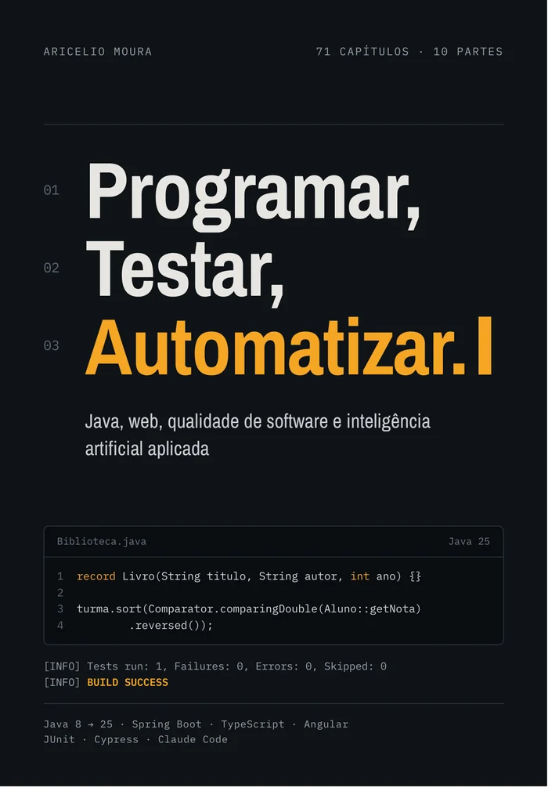
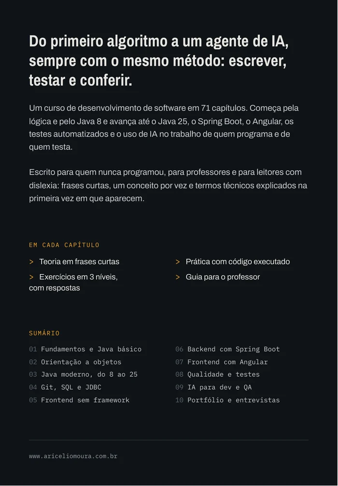

Escrever
Eu explico o conceito em frases curtas, e você escreve o código com as próprias mãos.
Lançamento 2026
Java, web, qualidade de software e inteligência artificial aplicada.
Eu levo você do primeiro algoritmo a um agente de IA, sempre com o mesmo método: escrever, testar e conferir.
Black Friday R$ 97,00 R$ 17,00 por tempo limitado · Garantia de 7 dias

Sobre o livro
Eu uso um método só, do primeiro capítulo ao último. Você aprende sem pressa e vê cada resultado com os próprios olhos.
Eu explico o conceito em frases curtas, e você escreve o código com as próprias mãos.
Todo código do livro foi executado antes de entrar no texto. Se rodou na minha máquina, vai rodar na sua também.
Você compara o seu resultado com o que eu mostro e descobre por que deu certo, ou por que deu errado.
public class Main {
public static void main(String[] args) {
int total = somar(2, 3);
System.out.println("Resultado: " + total);
}
static int somar(int a, int b) {
return a + b;
}
}Conteúdo
Capítulos 1 a 10
Capítulos 11 a 15
Capítulos 16 a 21
Capítulos 22 a 24
Capítulos 25 a 33
Capítulos 34 a 38
Capítulos 39 a 42
Capítulos 43 a 55
Capítulos 56 a 67
Capítulos 68 a 71
Para quem é
Eu apresento cada conceito em um passo por vez, com um exemplo que você pode rodar.
Uso frases curtas e parágrafos leves, e explico cada termo técnico na primeira vez em que ele aparece. Com menos esforço na leitura, sobra mais energia para aprender.
Os exercícios têm três níveis, com respostas, e cada capítulo traz um guia para você usar o livro em aula.

Autor
Escrevi este livro para quem nunca programou, para quem prefere um aprendizado mais leve e para quem vai dar aula. Visite o meu site e conheça meus outros trabalhos e o portfólio de criação de sites, sistemas e aplicativos.
www.ariceliomoura.com.brGaranta o seu
Você recebe o acesso ao livro completo, em PDF, por e-mail, logo depois da confirmação do pagamento.
Black Friday
de R$ 97,00 por
R$ 17,00
Oferta por tempo limitado · Pix, boleto ou cartão
Garantir exemplarCompra segura pela Hotmart · Garantia de 7 dias
Fale comigo pelo WhatsApp ou pelo Instagram. Eu combino a forma de pagamento com você e envio o livro.
Dúvidas
Não. Eu começo do zero e explico cada termo técnico na primeira vez em que ele aparece.
Você aprende Java, da versão 8 à 25, orientação a objetos, Git, SQL e JDBC, HTML, CSS e JavaScript, Spring Boot, Angular, testes com JUnit e Cypress, e o uso de inteligência artificial com Claude Code.
Sim. Eu executei todo o código antes de ele entrar no texto. Se rodou na minha máquina, vai rodar na sua também.
Pode. Cada capítulo traz exercícios em três níveis, com respostas, e um guia para você planejar a aula.
Sim. Eu escrevo com frases curtas e parágrafos leves, e explico cada termo técnico na primeira vez em que ele aparece. Isso ajuda qualquer pessoa a aprender com menos esforço.
O livro tem 906 páginas de conteúdo, com 71 capítulos organizados em 10 partes.
Pelo botão Garantir exemplar, aqui no site, que leva ao checkout seguro da Hotmart. Se preferir, fale comigo pelo WhatsApp ou pelo Instagram e eu combino a compra direta.
Na compra pela Hotmart, você pode pagar com Pix, boleto ou cartão. No cartão, as opções de parcelamento aparecem no checkout da Hotmart. Com o Pix a confirmação é rápida, e no boleto o acesso chega depois que o banco confirma o pagamento. Você tem 7 dias de garantia: se não gostar, peça o reembolso nesse prazo.